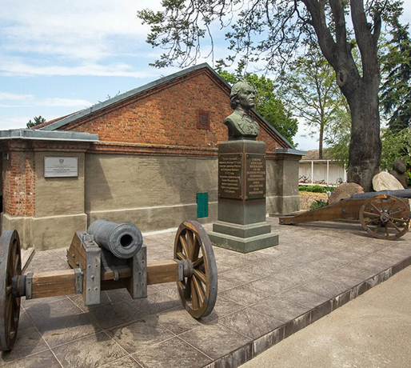
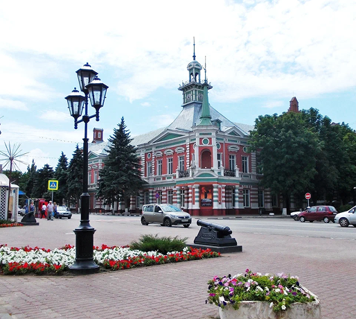
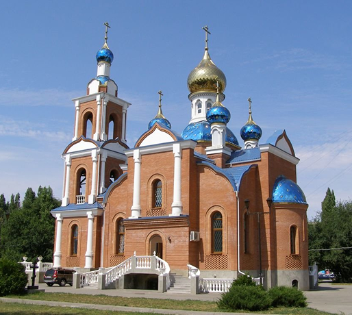

Чего мы там не видели?
Азов — это город с богатым историческим наследием, древними крепостными стенами и духом морских сражений. Здесь переплетаются казачьи традиции, шум прибрежных улочек и легенды о петровских победах. Азов поражает атмосферой старинного форпоста, где прошлое оживает в музеях, бастионах и величественных курганах, а вид на Дон наполняет город особым южным колоритом.
-
Пороховой погреб
Памятник военно-инженерного искусства XVIII века в городе Азов Ростовской области. Был построен в 1770 году. Внутри погреба были сделаны нары, на которые укладывали бочки с порохом. Деревянный погреб прослужил до 1797 года, после чего из-за ветхости был разобран.
-
Музей-заповедник
Один из крупнейших музеев юга России с самой богатой палеонтологической коллекцией на всем юге России. Музей основан 17 мая 1917 года Михаилом Ароновичем Макаровским.
-
Храм иконы Божией Матери Азовской
Православный храм в городе Азове. Принадлежит к Азовскому городскому благочинию Ростовской-на-дону епархии Русской православной церкви. Был основан в 1993 г. по благословению митрополита Ростовского и Новочеркасского Владимира (Котлярова).